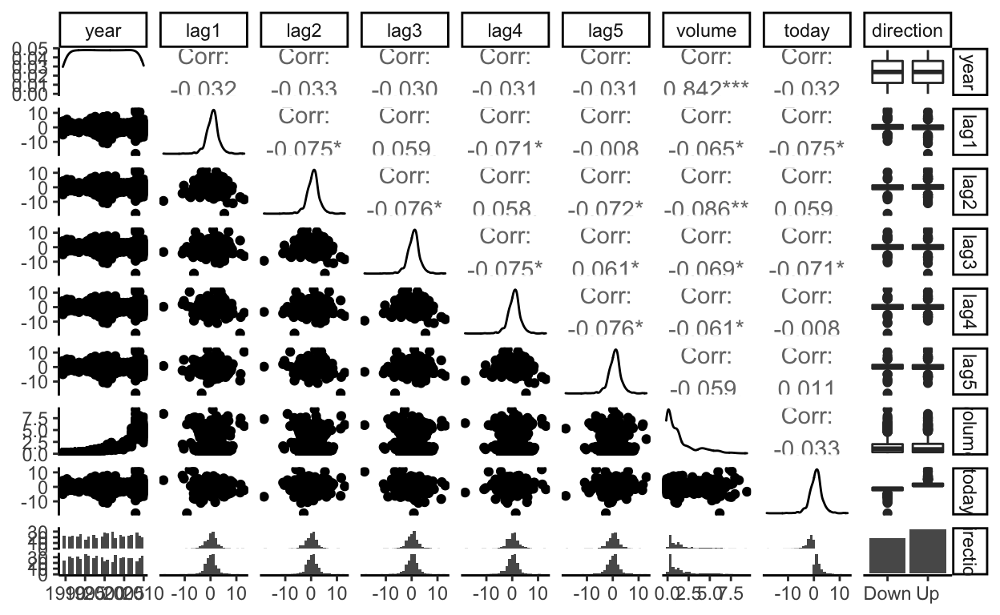
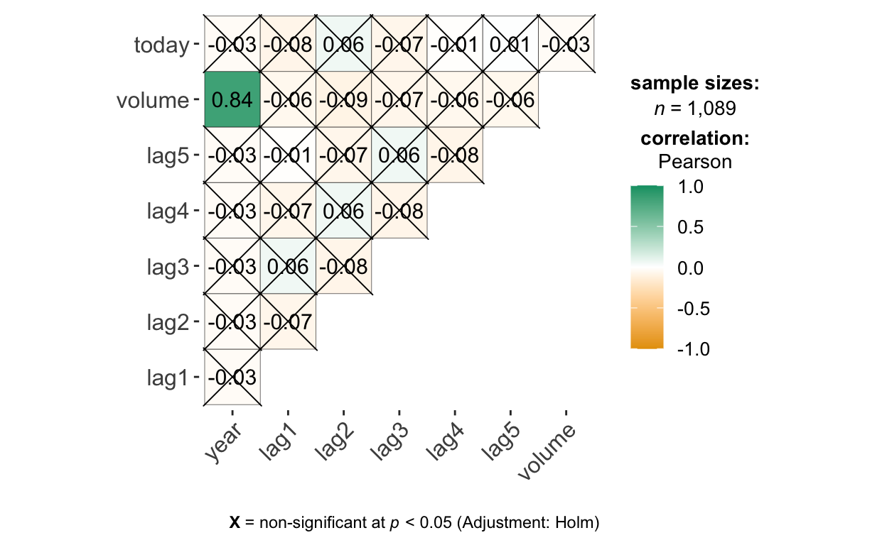
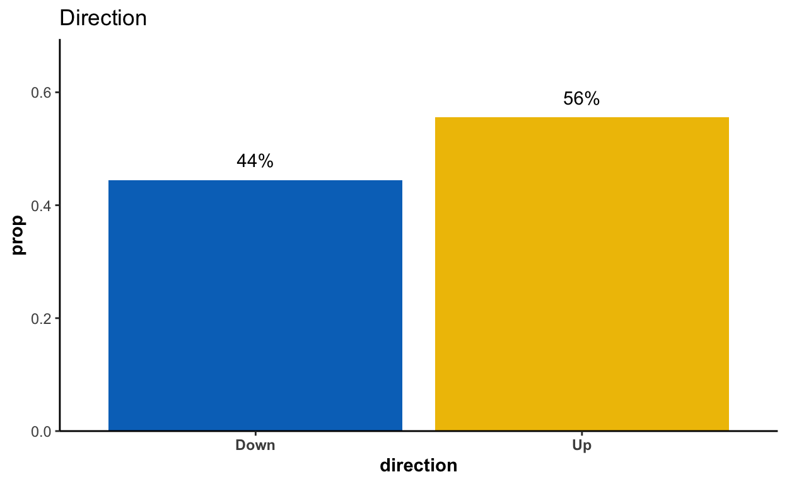
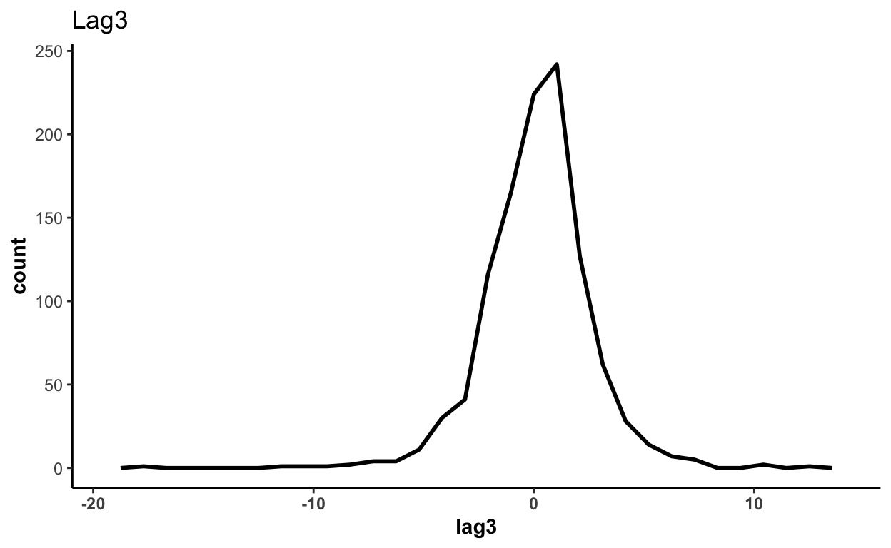
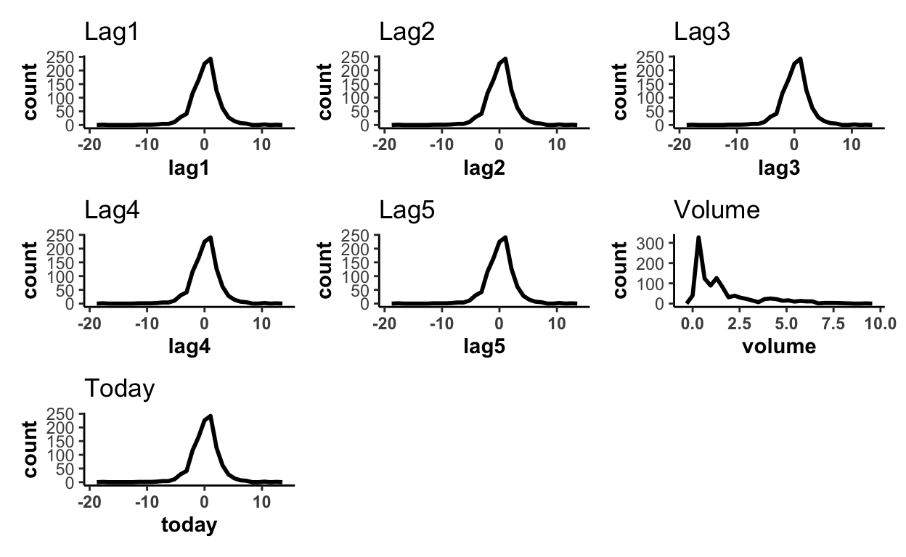
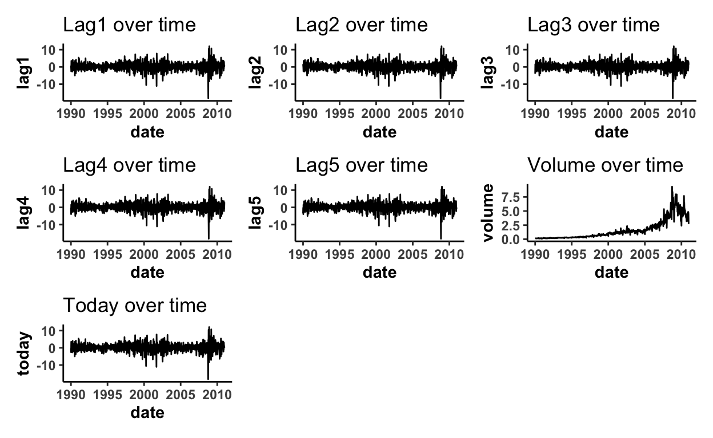

Predicting whether stock moves Up or Down
A simple exercise to understand how to run logistic regression with stock market data using the weekly dataset.
library(pacman)
p_load(ISLR2, tidyverse, tidymodels, janitor, GGally,
workflows, yardstick, discrim, skimr, ggsci,
patchwork, ggstatsplot)
The downloaded binary packages are in
/var/folders/x3/p1jlvsr16295bcpmlwd5cb5w0000gp/T//RtmpKgWoo9/downloaded_packagestheme_set(theme_classic())
This dataset consists of 1,089 weekly returns for 21 years, from the beginning of 1990 to end of 2010.
stock_market <- Weekly %>%
clean_names()
head(stock_market)
year lag1 lag2 lag3 lag4 lag5 volume today direction
1 1990 0.816 1.572 -3.936 -0.229 -3.484 0.1549760 -0.270 Down
2 1990 -0.270 0.816 1.572 -3.936 -0.229 0.1485740 -2.576 Down
3 1990 -2.576 -0.270 0.816 1.572 -3.936 0.1598375 3.514 Up
4 1990 3.514 -2.576 -0.270 0.816 1.572 0.1616300 0.712 Up
5 1990 0.712 3.514 -2.576 -0.270 0.816 0.1537280 1.178 Up
6 1990 1.178 0.712 3.514 -2.576 -0.270 0.1544440 -1.372 Downglimpse(stock_market) # 1,089 x 9
Rows: 1,089
Columns: 9
$ year <dbl> 1990, 1990, 1990, 1990, 1990, 1990, 1990, 1990, 19…
$ lag1 <dbl> 0.816, -0.270, -2.576, 3.514, 0.712, 1.178, -1.372…
$ lag2 <dbl> 1.572, 0.816, -0.270, -2.576, 3.514, 0.712, 1.178,…
$ lag3 <dbl> -3.936, 1.572, 0.816, -0.270, -2.576, 3.514, 0.712…
$ lag4 <dbl> -0.229, -3.936, 1.572, 0.816, -0.270, -2.576, 3.51…
$ lag5 <dbl> -3.484, -0.229, -3.936, 1.572, 0.816, -0.270, -2.5…
$ volume <dbl> 0.1549760, 0.1485740, 0.1598375, 0.1616300, 0.1537…
$ today <dbl> -0.270, -2.576, 3.514, 0.712, 1.178, -1.372, 0.807…
$ direction <fct> Down, Down, Up, Up, Up, Down, Up, Up, Up, Down, Do…summary(stock_market)
year lag1 lag2
Min. :1990 Min. :-18.1950 Min. :-18.1950
1st Qu.:1995 1st Qu.: -1.1540 1st Qu.: -1.1540
Median :2000 Median : 0.2410 Median : 0.2410
Mean :2000 Mean : 0.1506 Mean : 0.1511
3rd Qu.:2005 3rd Qu.: 1.4050 3rd Qu.: 1.4090
Max. :2010 Max. : 12.0260 Max. : 12.0260
lag3 lag4 lag5
Min. :-18.1950 Min. :-18.1950 Min. :-18.1950
1st Qu.: -1.1580 1st Qu.: -1.1580 1st Qu.: -1.1660
Median : 0.2410 Median : 0.2380 Median : 0.2340
Mean : 0.1472 Mean : 0.1458 Mean : 0.1399
3rd Qu.: 1.4090 3rd Qu.: 1.4090 3rd Qu.: 1.4050
Max. : 12.0260 Max. : 12.0260 Max. : 12.0260
volume today direction
Min. :0.08747 Min. :-18.1950 Down:484
1st Qu.:0.33202 1st Qu.: -1.1540 Up :605
Median :1.00268 Median : 0.2410
Mean :1.57462 Mean : 0.1499
3rd Qu.:2.05373 3rd Qu.: 1.4050
Max. :9.32821 Max. : 12.0260 stock_market %>%
skim()
| Name | Piped data |
| Number of rows | 1089 |
| Number of columns | 9 |
| _______________________ | |
| Column type frequency: | |
| factor | 1 |
| numeric | 8 |
| ________________________ | |
| Group variables | None |
Variable type: factor
| skim_variable | n_missing | complete_rate | ordered | n_unique | top_counts |
|---|---|---|---|---|---|
| direction | 0 | 1 | FALSE | 2 | Up: 605, Dow: 484 |
Variable type: numeric
| skim_variable | n_missing | complete_rate | mean | sd | p0 | p25 | p50 | p75 | p100 | hist |
|---|---|---|---|---|---|---|---|---|---|---|
| year | 0 | 1 | 2000.05 | 6.03 | 1990.00 | 1995.00 | 2000.00 | 2005.00 | 2010.00 | ▇▆▆▆▆ |
| lag1 | 0 | 1 | 0.15 | 2.36 | -18.20 | -1.15 | 0.24 | 1.41 | 12.03 | ▁▁▆▇▁ |
| lag2 | 0 | 1 | 0.15 | 2.36 | -18.20 | -1.15 | 0.24 | 1.41 | 12.03 | ▁▁▆▇▁ |
| lag3 | 0 | 1 | 0.15 | 2.36 | -18.20 | -1.16 | 0.24 | 1.41 | 12.03 | ▁▁▆▇▁ |
| lag4 | 0 | 1 | 0.15 | 2.36 | -18.20 | -1.16 | 0.24 | 1.41 | 12.03 | ▁▁▆▇▁ |
| lag5 | 0 | 1 | 0.14 | 2.36 | -18.20 | -1.17 | 0.23 | 1.41 | 12.03 | ▁▁▆▇▁ |
| volume | 0 | 1 | 1.57 | 1.69 | 0.09 | 0.33 | 1.00 | 2.05 | 9.33 | ▇▂▁▁▁ |
| today | 0 | 1 | 0.15 | 2.36 | -18.20 | -1.15 | 0.24 | 1.41 | 12.03 | ▁▁▆▇▁ |
stock_market %>%
ggpairs()

stock_market %>%
ggstatsplot::ggcorrmat()

Not much correlation except between volume and today.
stock_market %>%
group_by(direction) %>%
summarize(n = n(), .groups = "drop") %>%
mutate(prop = n/sum(n)) %>%
ggplot(aes(direction, prop, label = scales::percent(prop))) +
geom_col(aes(fill = direction), show.legend = F) +
geom_text(vjust = -1) +
scale_fill_jco() +
theme_classic() +
labs(title = "Direction") +
scale_y_continuous(expand = expansion(mult = c(0, 0.25))) +
theme(axis.title = element_text(face = "bold"),
axis.text.x = element_text(face = "bold"))

A simple plot:
stock_market %>%
ggplot(aes(lag1)) +
geom_freqpoly(size = 1) +
theme_classic() +
labs(title = "lag1") +
theme(axis.title = element_text(face = "bold"),
axis.text.x = element_text(face = "bold"))
A function:
plot_many_freqpoly <- function(var_x) {
stock_market %>%
ggplot(aes({{var_x}})) +
geom_freqpoly(size = 1) +
theme_classic() +
labs(title = str_to_title(as_label(enquo(var_x))),
x = as_label(enquo(var_x))) +
theme(axis.title = element_text(face = "bold"),
axis.text.x = element_text(face = "bold"))
}
plot_many_freqpoly(lag3)

# set names to loop through
num_var <- stock_market %>%
select(-year) %>%
select_if(is.numeric) %>%
names()
# let the iterations begin
num_var %>%
syms() %>% # take strings as input and turn them into symbols
map(function(var) plot_many_freqpoly({{var}})) %>%
wrap_plots() # from patchwork

stock_market %>%
count(year)
year n
1 1990 47
2 1991 52
3 1992 52
4 1993 52
5 1994 52
6 1995 52
7 1996 53
8 1997 52
9 1998 52
10 1999 52
11 2000 52
12 2001 52
13 2002 52
14 2003 52
15 2004 52
16 2005 52
17 2006 52
18 2007 53
19 2008 52
20 2009 52
21 2010 52# create sequence for number of weeks in data
stock_market_wk <- stock_market %>%
group_by(year) %>%
mutate(week = row_number()) %>% # create number of weeks
ungroup() %>%
mutate(week_digit = str_pad(week, width = 2, pad = "0")) %>% # create 2 digits
# Y: year, W: week number, w: weekday number
mutate(date = lubridate::parse_date_time(paste(year, week_digit, 1, sep = "/"),
"Y/W/w")) %>%
select(-week, -week_digit) %>%
select(year, date, everything())
glimpse(stock_market_wk)
Rows: 1,089
Columns: 10
$ year <dbl> 1990, 1990, 1990, 1990, 1990, 1990, 1990, 1990, 19…
$ date <dttm> 1990-01-01, 1990-01-08, 1990-01-15, 1990-01-22, 1…
$ lag1 <dbl> 0.816, -0.270, -2.576, 3.514, 0.712, 1.178, -1.372…
$ lag2 <dbl> 1.572, 0.816, -0.270, -2.576, 3.514, 0.712, 1.178,…
$ lag3 <dbl> -3.936, 1.572, 0.816, -0.270, -2.576, 3.514, 0.712…
$ lag4 <dbl> -0.229, -3.936, 1.572, 0.816, -0.270, -2.576, 3.51…
$ lag5 <dbl> -3.484, -0.229, -3.936, 1.572, 0.816, -0.270, -2.5…
$ volume <dbl> 0.1549760, 0.1485740, 0.1598375, 0.1616300, 0.1537…
$ today <dbl> -0.270, -2.576, 3.514, 0.712, 1.178, -1.372, 0.807…
$ direction <fct> Down, Down, Up, Up, Up, Down, Up, Up, Up, Down, Do…# create ggplot of y vs year
stock_market_wk %>%
ggplot(aes(date, volume)) +
geom_line() +
theme_classic() +
labs(title = "Plot of Vol over time") +
theme(axis.title = element_text(face = "bold"),
axis.text = element_text(face = "bold"))
# create function
plot_over_time <- function(var_y){
stock_market_wk %>%
ggplot(aes(date, {{var_y}})) +
geom_line() +
theme_classic() +
labs(title = str_c(str_to_title(as_label(enquo(var_y))),
" over time")) +
theme(axis.title = element_text(face = "bold"),
axis.text = element_text(face = "bold"))
}
# set names to loop through
num_var # from previous
[1] "lag1" "lag2" "lag3" "lag4" "lag5" "volume" "today" # iterate
num_var %>%
syms() %>% # take strings as input and turn them into symbols
map(function(var) plot_over_time({{var}})) %>%
wrap_plots() # from patchwork

Use the full dataset to perform a logistic regression with Direction as the response (Y) and the five lag variables plus Volume as the predictors (X).
Use the summary function to print the results.
Do any of the predictors appear to be statistically significant? – Yes, lag2
log_reg_main_e <- glm(direction ~ lag1 + lag2 + lag3 + lag4 + lag5 + volume,
data = stock_market,
family = binomial(link = "logit"))
summary(log_reg_main_e)
Call:
glm(formula = direction ~ lag1 + lag2 + lag3 + lag4 + lag5 +
volume, family = binomial(link = "logit"), data = stock_market)
Deviance Residuals:
Min 1Q Median 3Q Max
-1.6949 -1.2565 0.9913 1.0849 1.4579
Coefficients:
Estimate Std. Error z value Pr(>|z|)
(Intercept) 0.26686 0.08593 3.106 0.0019 **
lag1 -0.04127 0.02641 -1.563 0.1181
lag2 0.05844 0.02686 2.175 0.0296 *
lag3 -0.01606 0.02666 -0.602 0.5469
lag4 -0.02779 0.02646 -1.050 0.2937
lag5 -0.01447 0.02638 -0.549 0.5833
volume -0.02274 0.03690 -0.616 0.5377
---
Signif. codes: 0 '***' 0.001 '**' 0.01 '*' 0.05 '.' 0.1 ' ' 1
(Dispersion parameter for binomial family taken to be 1)
Null deviance: 1496.2 on 1088 degrees of freedom
Residual deviance: 1486.4 on 1082 degrees of freedom
AIC: 1500.4
Number of Fisher Scoring iterations: 4# tidy format
tidy(log_reg_main_e)
# A tibble: 7 × 5
term estimate std.error statistic p.value
<chr> <dbl> <dbl> <dbl> <dbl>
1 (Intercept) 0.267 0.0859 3.11 0.00190
2 lag1 -0.0413 0.0264 -1.56 0.118
3 lag2 0.0584 0.0269 2.18 0.0296
4 lag3 -0.0161 0.0267 -0.602 0.547
5 lag4 -0.0278 0.0265 -1.05 0.294
6 lag5 -0.0145 0.0264 -0.549 0.583
7 volume -0.0227 0.0369 -0.616 0.538 glance(log_reg_main_e)
# A tibble: 1 × 8
null.deviance df.null logLik AIC BIC deviance df.residual nobs
<dbl> <int> <dbl> <dbl> <dbl> <dbl> <int> <int>
1 1496. 1088 -743. 1500. 1535. 1486. 1082 1089Compute the confusion matrix and overall fraction of correct predictions.
pred <- stock_market %>%
mutate(pred = predict(log_reg_main_e,., type = "response"),
pred_dir = case_when(pred >0.5 ~"up", # down: 0, up: 1; alphabetical
TRUE ~ "down"),
dir_fct = as.factor(if_else(direction == "Up", "up", "down")),
pred_dir_fct = as.factor(if_else(pred_dir == "up", "up", "down")))
glimpse(pred)
Rows: 1,089
Columns: 13
$ year <dbl> 1990, 1990, 1990, 1990, 1990, 1990, 1990, 1990,…
$ lag1 <dbl> 0.816, -0.270, -2.576, 3.514, 0.712, 1.178, -1.…
$ lag2 <dbl> 1.572, 0.816, -0.270, -2.576, 3.514, 0.712, 1.1…
$ lag3 <dbl> -3.936, 1.572, 0.816, -0.270, -2.576, 3.514, 0.…
$ lag4 <dbl> -0.229, -3.936, 1.572, 0.816, -0.270, -2.576, 3…
$ lag5 <dbl> -3.484, -0.229, -3.936, 1.572, 0.816, -0.270, -…
$ volume <dbl> 0.1549760, 0.1485740, 0.1598375, 0.1616300, 0.1…
$ today <dbl> -0.270, -2.576, 3.514, 0.712, 1.178, -1.372, 0.…
$ direction <fct> Down, Down, Up, Up, Up, Down, Up, Up, Up, Down,…
$ pred <dbl> 0.6086249, 0.6010314, 0.5875699, 0.4816416, 0.6…
$ pred_dir <chr> "up", "up", "up", "down", "up", "up", "up", "up…
$ dir_fct <fct> down, down, up, up, up, down, up, up, up, down,…
$ pred_dir_fct <fct> up, up, up, down, up, up, up, up, up, up, up, u…stock_market %>%
count(direction)
direction n
1 Down 484
2 Up 605pred %>%
count(dir_fct)
dir_fct n
1 down 484
2 up 605pred %>%
count(pred_dir_fct)
pred_dir_fct n
1 down 102
2 up 987# the predicted model will predict more likely as Up when it is actually Down.
# low sensitivity: % that is really UP is predicted to be down
library(caret)
confusionMatrix(data= pred$pred_dir_fct, # predicted
reference = pred$dir_fct) # true
Confusion Matrix and Statistics
Reference
Prediction down up
down 54 48
up 430 557
Accuracy : 0.5611
95% CI : (0.531, 0.5908)
No Information Rate : 0.5556
P-Value [Acc > NIR] : 0.369
Kappa : 0.035
Mcnemar's Test P-Value : <2e-16
Sensitivity : 0.11157
Specificity : 0.92066
Pos Pred Value : 0.52941
Neg Pred Value : 0.56434
Prevalence : 0.44444
Detection Rate : 0.04959
Detection Prevalence : 0.09366
Balanced Accuracy : 0.51612
'Positive' Class : down
Tidymodels framework:
tm_log_reg <- logistic_reg() %>%
set_engine("glm") %>%
set_mode("classification")
tm_log_reg_fit <-
tm_log_reg %>%
fit(direction ~ lag1 + lag2 + lag3 + lag4 + lag5 + volume, data = stock_market)
tm_log_reg_fit
parsnip model object
Fit time: 7ms
Call: stats::glm(formula = direction ~ lag1 + lag2 + lag3 + lag4 +
lag5 + volume, family = stats::binomial, data = data)
Coefficients:
(Intercept) lag1 lag2 lag3 lag4
0.26686 -0.04127 0.05844 -0.01606 -0.02779
lag5 volume
-0.01447 -0.02274
Degrees of Freedom: 1088 Total (i.e. Null); 1082 Residual
Null Deviance: 1496
Residual Deviance: 1486 AIC: 1500tm_log_reg_fit %>%
pluck("fit") %>%
summary()
Call:
stats::glm(formula = direction ~ lag1 + lag2 + lag3 + lag4 +
lag5 + volume, family = stats::binomial, data = data)
Deviance Residuals:
Min 1Q Median 3Q Max
-1.6949 -1.2565 0.9913 1.0849 1.4579
Coefficients:
Estimate Std. Error z value Pr(>|z|)
(Intercept) 0.26686 0.08593 3.106 0.0019 **
lag1 -0.04127 0.02641 -1.563 0.1181
lag2 0.05844 0.02686 2.175 0.0296 *
lag3 -0.01606 0.02666 -0.602 0.5469
lag4 -0.02779 0.02646 -1.050 0.2937
lag5 -0.01447 0.02638 -0.549 0.5833
volume -0.02274 0.03690 -0.616 0.5377
---
Signif. codes: 0 '***' 0.001 '**' 0.01 '*' 0.05 '.' 0.1 ' ' 1
(Dispersion parameter for binomial family taken to be 1)
Null deviance: 1496.2 on 1088 degrees of freedom
Residual deviance: 1486.4 on 1082 degrees of freedom
AIC: 1500.4
Number of Fisher Scoring iterations: 4predict(tm_log_reg_fit, new_data = stock_market)
# A tibble: 1,089 × 1
.pred_class
<fct>
1 Up
2 Up
3 Up
4 Down
5 Up
6 Up
7 Up
8 Up
9 Up
10 Up
# … with 1,079 more rowsaugment(tm_log_reg_fit, new_data = stock_market) %>%
conf_mat(truth = direction, estimate = .pred_class) %>%
autoplot(type = "heatmap")
augment(tm_log_reg_fit, new_data = stock_market) %>%
accuracy(truth = direction, estimate = .pred_class)
# A tibble: 1 × 3
.metric .estimator .estimate
<chr> <chr> <dbl>
1 accuracy binary 0.561Training data: from 1990 - 2008 Test data: 2009 - 2010 with lag2 as the only predictor
The same model can be used, but I will just create again.
lr_model <-
logistic_reg() %>%
set_engine("glm")
stock_recipe <-
recipe(direction ~ lag2, data = train_data)
summary(stock_recipe)
# A tibble: 2 × 4
variable type role source
<chr> <chr> <chr> <chr>
1 lag2 numeric predictor original
2 direction nominal outcome originalstock_workflow <-
workflow() %>%
add_model(lr_model) %>%
add_recipe(stock_recipe)
stock_workflow
══ Workflow ══════════════════════════════════════════════════════════
Preprocessor: Recipe
Model: logistic_reg()
── Preprocessor ──────────────────────────────────────────────────────
0 Recipe Steps
── Model ─────────────────────────────────────────────────────────────
Logistic Regression Model Specification (classification)
Computational engine: glm stock_fit <-
stock_workflow %>%
fit(data = train_data)
stock_fit %>%
extract_fit_parsnip() %>%
tidy()
# A tibble: 2 × 5
term estimate std.error statistic p.value
<chr> <dbl> <dbl> <dbl> <dbl>
1 (Intercept) 0.203 0.0643 3.16 0.00157
2 lag2 0.0581 0.0287 2.02 0.0430 predict(stock_fit, test_data)
# A tibble: 104 × 1
.pred_class
<fct>
1 Up
2 Up
3 Down
4 Down
5 Up
6 Up
7 Up
8 Down
9 Down
10 Down
# … with 94 more rowsstock_augment <-
augment(stock_fit, test_data) %>%
select(year, direction, .pred_class, .pred_Down, .pred_Up)
stock_augment
# A tibble: 104 × 5
year direction .pred_class .pred_Down .pred_Up
<dbl> <fct> <fct> <dbl> <dbl>
1 2009 Down Up 0.474 0.526
2 2009 Down Up 0.355 0.645
3 2009 Down Down 0.514 0.486
4 2009 Down Down 0.515 0.485
5 2009 Up Up 0.480 0.520
6 2009 Down Up 0.460 0.540
7 2009 Down Up 0.377 0.623
8 2009 Down Down 0.519 0.481
9 2009 Down Down 0.549 0.451
10 2009 Up Down 0.515 0.485
# … with 94 more rowsstock_augment %>%
conf_mat(truth = direction, estimate = .pred_class)
Truth
Prediction Down Up
Down 9 5
Up 34 56stock_augment %>%
accuracy(truth = direction, estimate = .pred_class) # 62.5%
# A tibble: 1 × 3
.metric .estimator .estimate
<chr> <chr> <dbl>
1 accuracy binary 0.625metrics <- metric_set(accuracy, sens, spec)
metrics(stock_augment,
truth = direction,
estimate = .pred_class)
# A tibble: 3 × 3
.metric .estimator .estimate
<chr> <chr> <dbl>
1 accuracy binary 0.625
2 sens binary 0.209
3 spec binary 0.918stock_augment %>%
roc_curve(truth = direction, .pred_Down) %>%
autoplot()
stock_augment %>%
roc_auc(truth = direction, .pred_Down) # 0.52
# A tibble: 1 × 3
.metric .estimator .estimate
<chr> <chr> <dbl>
1 roc_auc binary 0.546[ISLR2 book] (https://web.stanford.edu/~hastie/ISLRv2_website.pdf)
https://discrim.tidymodels.org/reference/discrim_linear.html
https://stackoverflow.com/questions/32470414/convert-week-number-to-date
https://www.kirenz.com/post/2021-02-17-r-classification-tidymodels/
https://rstudio-pubs-static.s3.amazonaws.com/290310_86f15a6b4efa4085beb912cf0ef757d6.html
https://emilhvitfeldt.github.io/ISLR-tidymodels-labs/classification.html
For attribution, please cite this work as
lruolin (2021, Oct. 27). pRactice corner: Weekly Stock Market Data (ISLR2). Retrieved from https://lruolin.github.io/myBlog/posts/20211026 ISLR2 Weekly Stockmarket Data/
BibTeX citation
@misc{lruolin2021weekly,
author = {lruolin, },
title = {pRactice corner: Weekly Stock Market Data (ISLR2)},
url = {https://lruolin.github.io/myBlog/posts/20211026 ISLR2 Weekly Stockmarket Data/},
year = {2021}
}